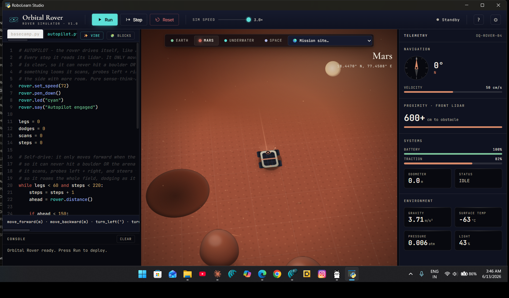
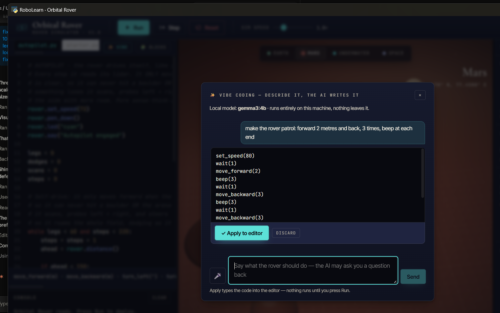
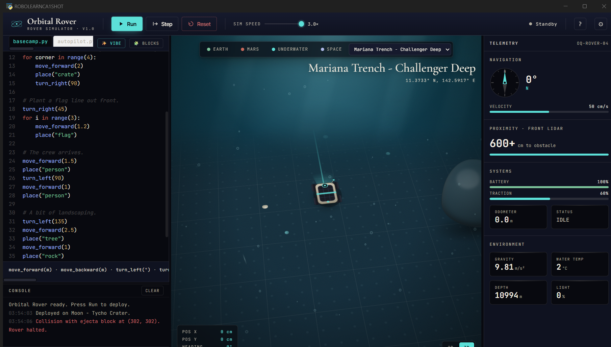
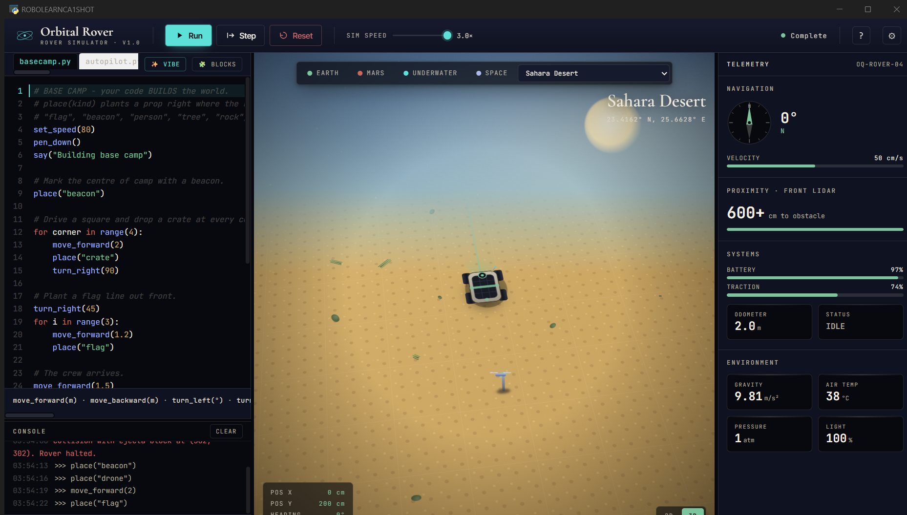
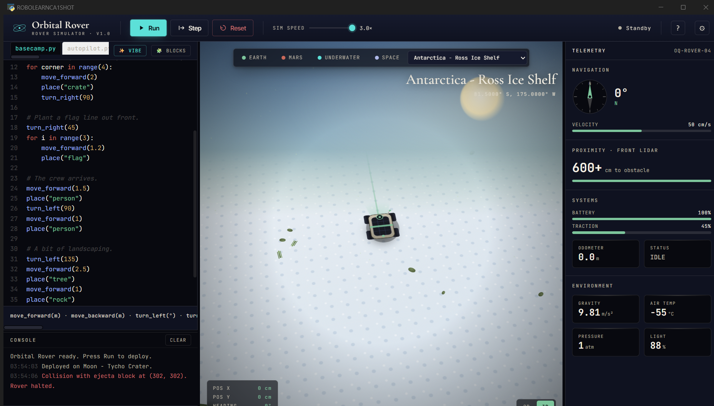

RoboLearn is a desktop application that teaches the early ideas of programming and computational thinking by letting a learner command a small simulated planetary rover. The learner describes a mission in ordinary language, such as a request to drive a square and plant a marker at each corner. A language model running entirely on the same computer turns that request into a short Python program, the learner inspects it, and on approval the program drives the rover across a two dimensional world rendered in the browser engine that the application embeds. The whole system works without any internet connection, which means it can be used in a classroom, a hall of residence or a public library where network access is restricted or absent.
The problem the project addresses is a practical one. Physical robot kits are expensive, fragile and difficult to share among a large cohort, and cloud based coding assistants raise cost, privacy and access barriers that are unwelcome in education. By replacing the physical robot with an accurate simulation, and by replacing the remote assistant with a small model that the institution controls, RoboLearn removes those barriers while keeping the part that matters for learning, namely the cycle of expressing an intention, reading the resulting code and observing its effect. The target audience, following the advice of the project supervisor, is the student who is beginning to learn to program, in particular the first year undergraduate in computing, for whom the platform offers a low pressure path from natural language into readable, executable code.
The project pursues four aims. The first is to design and build a robot simulation platform that teaches programming to beginning undergraduate students through conversation in natural language. The second is to engineer and assess a purpose built local language model, named robolearn-fast, that is adapted to this educational domain and that needs no internet connection. The third is to investigate whether conversational, assisted coding lowers the cognitive barrier to learning computational thinking when compared with a conventional text editor. The fourth is to evaluate the usability and the educational value of the platform with real participants rather than by assertion.
Several requirements are treated as essential. The system must accept a mission described in natural language and return executable Python that controls the rover. When a request is too vague to act upon, the assistant must ask one short clarifying question before it writes any code, so that the learner is guided rather than given a confident but wrong answer. Every program the model produces must be checked in a sandbox before it is shown, so that the learner is never handed code that fails on the first line. The simulation must run fully offline, the time from request to a visible response must remain below ten seconds on ordinary consumer hardware, and the platform must offer at least five distinct mission environments whose physics differ in a measurable way. A further group of requirements is desirable rather than essential. These include spoken input and spoken output for hands free use, a set of real geographic and planetary locations carrying authentic physical parameters, a companion agent in the form of a small drone, the ability to place a learner supplied photograph into the world, and a graded lesson sequence with progress tracking for each pupil.
The educational foundation of the work is constructionism, the position of Papert (1980) that learners build understanding most effectively when they make something shareable and observe how it behaves. The rover, whose every instruction produces a visible consequence, is a direct expression of that idea. The same lineage runs through the block based environment Scratch, which Resnick et al. (2009) designed so that programming would appeal to people who had not previously thought of themselves as programmers. RoboLearn extends this progression by adding a conversational route into text based Python, positioned between the visual simplicity of blocks and the full responsibility of a blank editor.
Simulation has long substituted for hardware in robotics teaching and research. Michel (2004) described Webots as a professional environment for modelling and programming mobile robots, and tools such as Webots and Gazebo remain the reference points for high fidelity simulation. These systems are powerful but heavy and are normally installed and configured by specialists, whereas RoboLearn favours immediate access and a single download, trading physical fidelity for approachability and offline operation.
The conversational element draws on the literature of code generation by large language models. Chen et al. (2021) introduced Codex and reported that sampling repeatedly from the model and selecting a working candidate raised the proportion of solved problems from roughly twenty nine percent with a single sample to about seventy percent with one hundred samples. That finding is the evidence base for the validation and repair strategy adopted here, since the platform generates, checks and only then presents a program. The popular description of programming by stating intent and accepting generated code, named vibe coding by Karpathy (2025), captures the interaction style, although Vaithilingam, Zhang and Glassman (2022) provide a necessary caution: in their controlled study of Copilot, the tool did not reliably reduce task time or raise success, yet participants still preferred it as a useful starting point, and they struggled to read and repair long blocks of generated code. RoboLearn responds to that evidence directly by keeping every program short, by asking before guessing, and by guaranteeing that what appears has already executed.
The decision to run a model locally rests on the recent progress in small open weight models. The Gemma 3 technical report (Gemma Team, 2025) describes an open family from one to twenty seven billion parameters trained with distillation, of which the one billion variant is small enough to respond quickly on a laptop. The platform adapts that base without the cost of full fine tuning, instead baking its instructions and worked examples into the model template through the Ollama tooling (Ollama, 2024), a lightweight form of domain adaptation that contrasts with, and is informed by, the knowledge distillation of Hinton, Vinyals and Dean (2015). Finally, the project sits within the field of artificial intelligence in education, where Zawacki-Richter et al. (2019) reviewed the literature and found a striking absence of educators and of critical reflection. A project that places a working, evaluated teaching tool in front of real learners is a small contribution towards closing that gap.
The application is built from two cooperating layers. The interface is written in JavaScript with React and renders the simulation, the conversation and the editor inside an embedded browser window. The engine that runs and grades pupil code, together with the bridge to the language model, is written in Python. The two communicate locally, so the learner sees one window and never a console. The language model is served by Ollama and is a custom model, robolearn-fast, created from the Gemma 3 one billion base by writing the full system instruction and several validated examples into the model definition. The choice of the smaller base is deliberate. With roughly a quarter of the parameters of the four billion variant it decodes several times faster on ordinary hardware, and the loss of raw capability is recovered by the surrounding engineering, namely a fast draft that is validated, repaired by deterministic rules where a fault is mechanical, and escalated to the larger model only when a draft cannot be made correct. Running the model on the same machine also protects privacy and removes any dependence on a network, which matters in schools with restricted connectivity.
The work followed an iterative method. Each capability was added behind continuous integration, measured against a small scorecard of representative tasks, and refined until it passed. Version control is held on GitHub, where the project is released as a public beta with installation instructions, and the integration pipeline builds and tests the system on the Windows, macOS and Linux platforms. Six tagged releases, from version one point zero to version one point six, record the progression.

The project falls under data category A0. No data derived from humans or animals is used to build or to operate the platform. Every value that the simulation reports, including the rover position, the remaining battery and the sensor readings, is produced by the application as it runs. The physical constants that distinguish one mission site from another, such as the surface gravity of Mars or of the Moon, are taken from the published planetary fact sheet of NASA (2024), which is openly available and contains no personal information. No external dataset is downloaded or stored. During the later evaluation the project will collect only anonymous questionnaire responses and timing measurements, which are aggregated before any appear in the dissertation.
Testing operates at two levels. At the technical level the codebase carries 678 automated tests run on every change across three operating systems, and a task scorecard records the proportion of generated programs that execute correctly, the proportion of ambiguous requests that receive a clarifying question rather than a guess, and the time taken to first response. In the most recent measurement the model produced a valid program for every task in the standard set, asked a question for every fully unspecified request, and answered in roughly three seconds, with an immediate response for a repeated request.
The educational evaluation will involve human participants. Between five and eight first year undergraduate students will be recruited on a voluntary basis. Each will complete a short, structured sequence in which the same three missions are attempted twice, once with RoboLearn and once in a conventional Python editor, with the order varied between participants to limit ordering effects. The measures collected are the time to complete each mission, the number of errors encountered, a self report of confidence on a Likert scale, and observations from a think aloud commentary. All data are anonymous and aggregated, and the comparison of the two conditions provides evidence on whether the conversational approach genuinely lowers the barrier to a first program rather than merely being preferred, which is the careful distinction that the Copilot study cited above makes necessary.


No human derived data is involved during development, so the development phase is category A0, and human participants appear only in the evaluation, which places that phase in participant category 2. Participants will be first year undergraduate students who take part voluntarily. Their task is to use the software and to complete a short questionnaire that collects no sensitive information. Every participant will receive an information sheet and will sign a consent form before taking part, and every participant may withdraw at any point without giving a reason. Where a think aloud session is recorded, this happens only with explicit consent, and the recording is transcribed and then deleted. There is no covert observation, no financial inducement and no collection of identifying detail, and all responses are anonymised and aggregated before they are reported. The author will obtain the necessary ethical approval before any session takes place.
The project addresses each of the six accreditation outcomes set by the British Computer Society. It shows a systematic understanding at the forefront of the discipline, because the local deployment of language models and their adaptation to a narrow domain, through template baking and self distillation, are matters of active research in 2024 and 2025. It applies a comprehensive range of techniques, since tiered inference, sandboxed validation and deterministic repair are methods drawn from production systems and assembled here into a coherent pipeline. It demonstrates originality, in that a purpose built model is created for an educational rover simulator and authentic planetary physics is brought into a lightweight teaching tool. It handles a complex problem and communicates it clearly, because a system of an interface, a Python engine, a model runtime and a custom model is built and then documented so that a non specialist reader can follow it. It evidences self direction, since the platform was designed and built independently and advanced through six tested releases. Finally it shows critical self evaluation, most clearly in the honest finding that an attempt to improve the model by self distillation performed worse than careful hand curation on this small base, a result that was measured and then acted upon rather than concealed.


The interface is organised as a single workspace, shown in Figure 1 and in the figures above. A column on the left holds the code editor with its example tabs and, beneath it, the console and a live interactive prompt. The centre is given to the three dimensional viewport in which the rover, the terrain and any placed objects are drawn, with a heading bar above it that carries the run controls, the simulation speed and the mission site selector. A column on the right presents the telemetry for the current world together with the lesson and progress information. The conversational panel, illustrated in Figure 2, opens over this workspace when the learner chooses to describe a mission in words rather than type code directly. The figures in this proposal are screenshots of the running application rather than sketches, since the system is already built.
The plan that follows allocates the period from the present to final submission, with the specification due first and the dissertation last. Phases overlap where the work allows, for example the writing of the dissertation begins while analysis is still in progress.
| Phase | Activity | Dates | June to September 2026 |
|---|---|---|---|
| 1 | Background reading, literature review and refinement of scope | 1 to 19 June | |
| 2 | Evaluation design, participant recruitment and ethics forms | 19 June to 10 July | |
| 3 | Conduct of the user study and data collection | 10 July to 1 Aug | |
| 4 | Analysis of results and dissertation writing | 1 to 21 Aug | |
| 5 | Video presentation recording and preparation | 15 to 21 Aug | |
| 6 | Preparation for the question and answer session | 21 to 28 Aug | |
| 7 | Final dissertation write up and revision | 28 Aug to 4 Sept | |
| 8 | Submission of the dissertation | 11 Sept |
| Risk | Contingency | Likelihood | Impact |
|---|---|---|---|
| Too few participants are recruited for the evaluation | Extend the recruitment window, widen it to other year groups and use convenience sampling among willing volunteers | Medium | High |
| A change in the Ollama or Gemma tooling breaks the model bridge | Pin the runtime version in the requirements and retain a rule based fallback that generates simple code without the model | Low | High |
| Hardware for the user study is unavailable on the day | Run sessions remotely by screen share and provide supervised remote access to the application | Low | Medium |
| Additional features extend the work beyond the deadline | Time box every feature and write the dissertation about what was built rather than what could be added | Medium | Medium |
| Loss of code or of the dissertation | Keep all work under version control on GitHub with an additional copy on the university storage | Low | High |
A working beta of the platform is already released on the project repository at github.com/vaibhav4046/robolearn, with installation instructions for the desktop application, so that the supervisor and any reviewer may install and test it directly. The work to come is concerned less with new construction than with evaluation and academic framing, although a clear technical roadmap remains. Planned directions include a spoken agent that can carry out a mission end to end from voice alone, awareness of context across a session so that the assistant remembers earlier missions and the learner’s progress, and a self improving generation loop in which every validated solution feeds back into the examples that guide the model. These directions are recorded so that the contribution can be judged against its intent as well as its present state.
British Computer Society (2022) BCS Code of Conduct. Swindon: BCS, The Chartered Institute for IT. Available at: https://www.bcs.org/membership-and-registrations/become-a-member/bcs-code-of-conduct/ (Accessed: 13 June 2026).
Chen, M., Tworek, J., Jun, H., Yuan, Q., Pinto, H.P. de O. et al. (2021) ‘Evaluating large language models trained on code’, arXiv preprint arXiv:2107.03374.
Gemma Team (2025) ‘Gemma 3 technical report’, arXiv preprint arXiv:2503.19786. Google DeepMind.
Hinton, G., Vinyals, O. and Dean, J. (2015) ‘Distilling the knowledge in a neural network’, arXiv preprint arXiv:1503.02531.
Karpathy, A. (2025) Post on X, 2 February. Available at: https://x.com/karpathy/status/1886192184808149383 (Accessed: 13 June 2026).
Michel, O. (2004) ‘Cyberbotics Ltd. Webots: professional mobile robot simulation’, International Journal of Advanced Robotic Systems, 1(1), pp. 39-42.
NASA (2024) Planetary Fact Sheet. NASA Goddard Space Flight Center. Available at: https://nssdc.gsfc.nasa.gov/planetary/factsheet/ (Accessed: 13 June 2026).
Ollama (2024) Ollama documentation. Available at: https://github.com/ollama/ollama (Accessed: 13 June 2026).
Papert, S. (1980) Mindstorms: Children, Computers, and Powerful Ideas. New York: Basic Books.
Resnick, M., Maloney, J., Monroy-Hernández, A., Rusk, N., Eastmond, E., Brennan, K., Millner, A., Rosenbaum, E., Silver, J., Silverman, B. and Kafai, Y. (2009) ‘Scratch: programming for all’, Communications of the ACM, 52(11), pp. 60-67.
Vaithilingam, P., Zhang, T. and Glassman, E.L. (2022) ‘Expectation vs. experience: evaluating the usability of code generation tools powered by large language models’, CHI Conference on Human Factors in Computing Systems Extended Abstracts. New York: ACM.
Zawacki-Richter, O., Marín, V.I., Bond, M. and Gouverneur, F. (2019) ‘Systematic review of research on artificial intelligence applications in higher education: where are the educators?’, International Journal of Educational Technology in Higher Education, 16(39).
Acknowledgement of assistance: portions of this document were drafted with assistance from an artificial intelligence writing tool (Claude, Anthropic). All technical claims describe the author’s own system and were verified by the author, and all cited references were checked against their original sources.